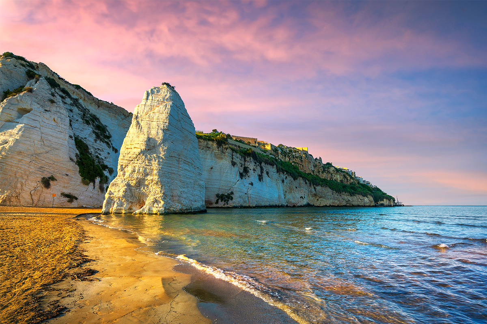

Spiaggia di Pizzomunno — Vieste
Monolite bianco alto 25 m, fondali sabbiosi digradanti, simbolo della città di Vieste.
Il Promontorio del Gargano è lo "sperone" dello stivale italiano: un massiccio calcareo che si protende nell'Adriatico con una costa frastagliata di scogliere bianche, calette turchesi e grotte marine. Il Parco Nazionale del Gargano copre oltre 118.000 ettari includendo la Foresta Umbra — una delle foreste vetuste riconosciute dall'UNESCO nel 2017 — e le Isole Tremiti, arcipelago di cinque isole dal mare cristallino. A nord, la pianura del Tavoliere è tra le più fertili d'Italia, con Foggia capoluogo e borghi come Lucera e Troia.
Diving alle Isole Tremiti (Secca della Vedova, Cala Capraia) — fondali ricchi di posidonia e fauna marina
Escursioni in barca da Vieste — grotte marine, archi e calette raggiungibili solo via acqua
Trekking nella Foresta Umbra — sentieri CAI per oltre 30 km tra faggi centenari
Sentiero dell'Amore — percorso di 3 km tra Vignanotica e Baia delle Zagare sulle scogliere
Windsurf e kitesurf a Manfredonia — venti favorevoli tutto l'anno sul golfo